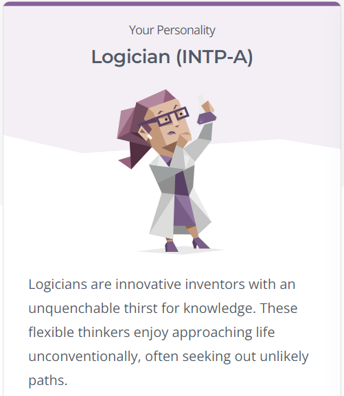

Personality test Results
This is the result of the personality test I took from:
16 Personalities

Validity:
- I believe the test has a rather large margin of general accuracy;
being accurate enough to gauge the general framework of my personality
- The test is mostly accurate in my personality analysis. It is
accurate enough to deduce that I enjoy approaching life
through unconventional means